Reward-Free Data Once, Any LQR Task Instantly
Classical RL and adaptive dynamic programming for the linear quadratic regulator solve one performance index at a time. Each change to the weights $(Q,R)$ forces another pass over the data and another policy iteration. We bring zero-shot reinforcement learning to LQR. A fixed-size statistic of reward-free data then solves every task exactly, without touching the data again.
Full abstract
Reinforcement learning (RL) and adaptive dynamic programming (ADP) algorithms for the linear quadratic regulator (LQR) learn the optimal gain for one performance index. Each time the designer changes the weights $(Q,R)$, these algorithms must re-collect or re-process data and re-run policy iteration. Zero-shot RL instead learns a representation from reward-free interaction and reads out the optimal policy for any reward revealed at test time, without further learning. Existing zero-shot methods, however, rely on neural approximation and give no stability or optimality guarantee. This paper brings zero-shot RL to linear optimal control. For linear systems with quadratic costs, we show three facts. First, the successor features of every linear policy are exact quadratic forms. Second, the map from $(Q,R)$ to the Q-function kernel is linear, with a closed-form successor operator. Third, a fixed-size second-moment statistic of reward-free data is a sufficient zero-shot representation. On this basis, we propose a zero-shot LQR algorithm for discrete-time systems. An offline phase compresses arbitrary reward-free trajectories into the representation. A test phase maps any task $(Q,R)$, given explicitly or through reward labels, to a gain. The test phase uses either a data-free policy iteration or, with no iteration, successor-feature generalized policy improvement (GPI). We prove three guarantees. With noise-free persistently exciting data, the returned gains equal the Riccati-optimal gains for all tasks simultaneously. The GPI policy is exponentially stabilizing and no worse than any library policy. Under sub-Gaussian process noise, the following holds with probability $1-\delta$ and uniformly over a compact task set: the gains are stabilizing, and their relative suboptimality is $O\!\big(\sigma_w\sqrt{\log(1/\delta)/(N\lambda_{\mathrm{PE}})}\big)$. Here $N$ is the number of samples and $\lambda_{\mathrm{PE}}$ is the persistency-of-excitation level. A certificate computed from data verifies stability and suboptimality for each task. The framework extends to continuous-time systems through an integral-data Gram representation and a data-free Kleinman iteration. On the unstable batch reactor, simulations confirm exactness to machine precision over 200 random tasks and the predicted sample complexity. The test-time cost per task stays at $0.4\,$ms for every data length, whereas per-task off-policy Q-learning takes $14$–$359\,$ms.
Compress One Reward-Free Dataset, Then Map Any Task in Closed Form
The offline phase accumulates second moments of reward-free, off-policy trajectories and, optionally, a small library of successor operators for anchor tasks. At test time, any task is mapped to a stabilizing gain without touching the data or the plant again.
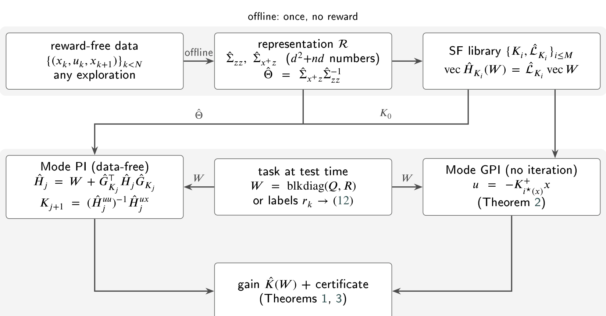
Theorem: Uniform Zero-Shot Guarantee
Assume sub-Gaussian process noise. Then the following holds with probability at least $1-\delta$, uniformly over a compact task set $\mathcal{W}$: the gains returned by Mode PI are stabilizing, and their relative suboptimality is $O\!\big(\sigma_w\sqrt{\log(1/\delta)/(N\lambda_{\mathrm{PE}})}\big)$. The statement rests on a single probabilistic event, so it needs no union bound over tasks. A certificate computed from the representation alone verifies stability and suboptimality for each individual task.
One Dataset per System, Many Controllers Read Out of It
The offline phase sees the simulator once, through reward-free rollouts driven by random inputs near an equilibrium. It never touches the simulator again. Every task $(Q,R)$ posed afterwards becomes a gain computed from the fixed-size representation alone, and that gain goes straight back into the nonlinear simulator. No retuning, no new rollouts, and no gradient steps separate one task from the next.
Cart-Pole
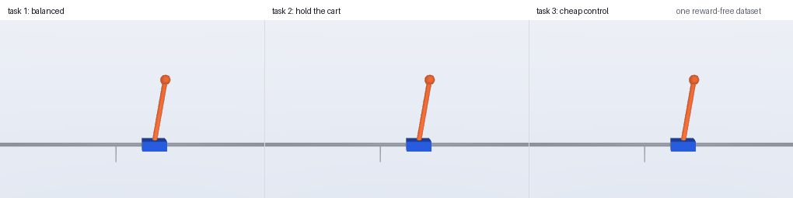
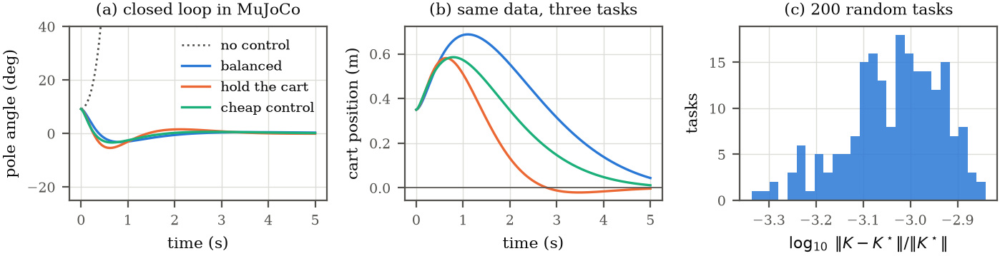
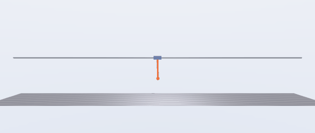
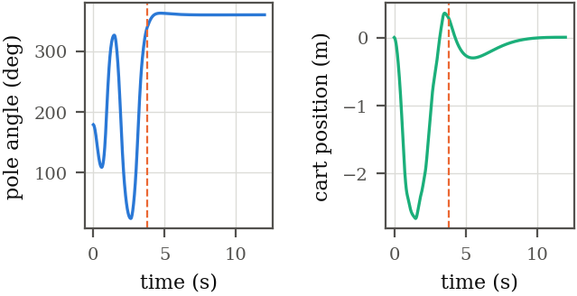
Quadrotor at Hover
Hover is a harder case, and not only because the state is 12-dimensional with four inputs. The equilibrium input is nonzero, since the rotors carry the weight. The representation is therefore built on deviations from the trim point $(x^\star,u^\star)$. Regressing on raw states and inputs instead would push the missing affine term into $\hat\Theta$ and bias it.
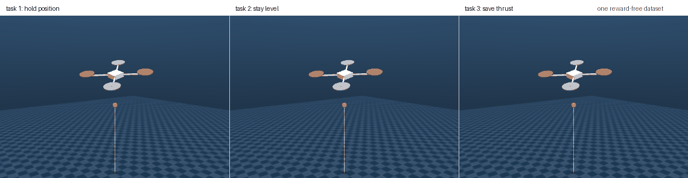
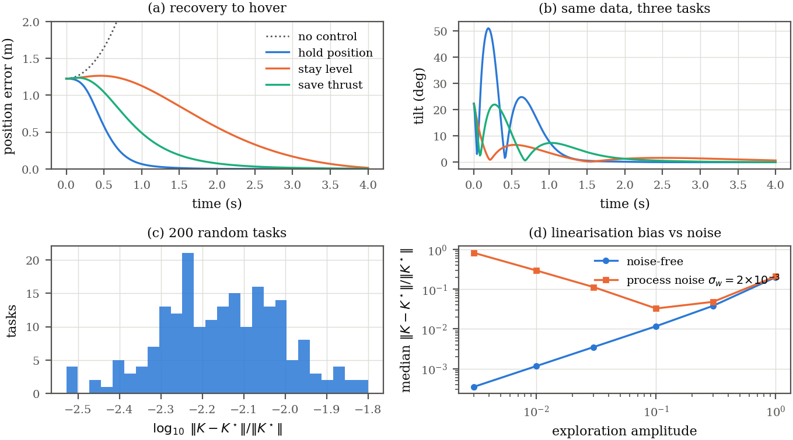
Tracking a Trajectory
Tracking needs no new theory and no new data. Around a feasible reference, the error $e=x-x_{\mathrm{ref}}$ obeys the same linear system as at hover, so the same gain closes the loop: $u=u_{\mathrm{ref}}-K\,(x-x_{\mathrm{ref}})$. The reference also comes out of the representation. For a circle, the identified model $\hat\Theta=[\hat A\;\hat B]$ gives the periodic pair $(x_{\mathrm{ref}},u_{\mathrm{ref}})$ from one square complex linear system. Nothing in the loop touches the simulator or the data after the offline phase.
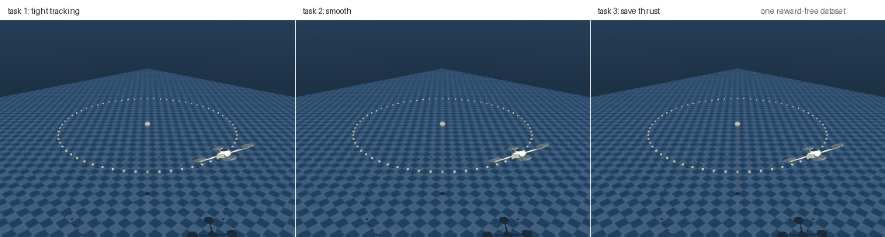
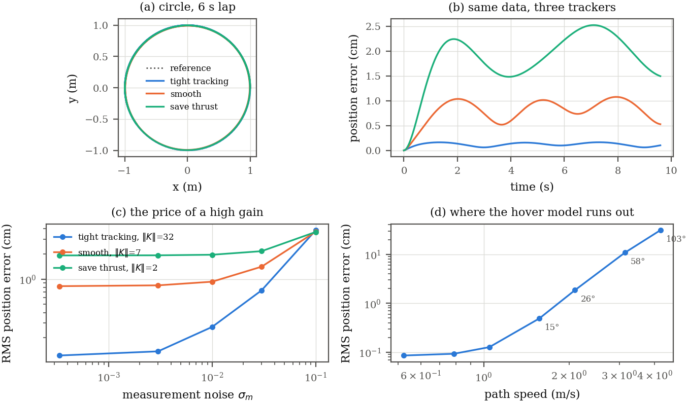
Ballbot
A ballbot balances on a single ball, so it is unstable in two directions at once and every input couples a translation to a tilt: the motor pushes the ball one way and the trunk the other. The ball rolls without slipping, which ties its spin to its position. The model therefore treats it as a point of effective mass $m_b + I_b/r^2$ and loads the ball and the trunk through a tendon actuator, with the reaction torque on the trunk. The state has 8 dimensions and there are 2 inputs.
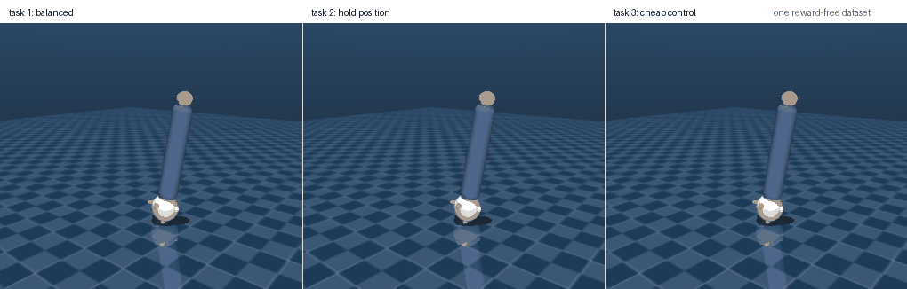
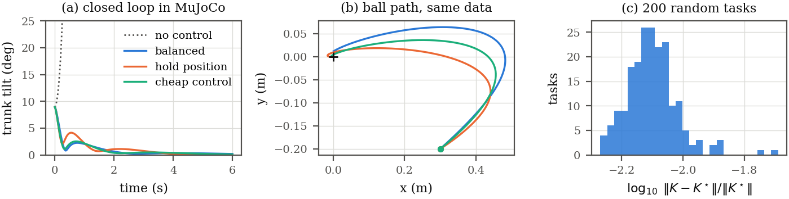
Ballbot on a Circle
The ballbot also tracks a path, again with no new data and no new theory. The error around a feasible reference follows the same linear system, so the gain read out of the same representation closes the loop on the error. The reference itself, including the trunk lean that a steady turn demands, comes from the identified model: for a circle it solves one square complex system. Nothing in the loop touches the simulator or the data after the offline phase.
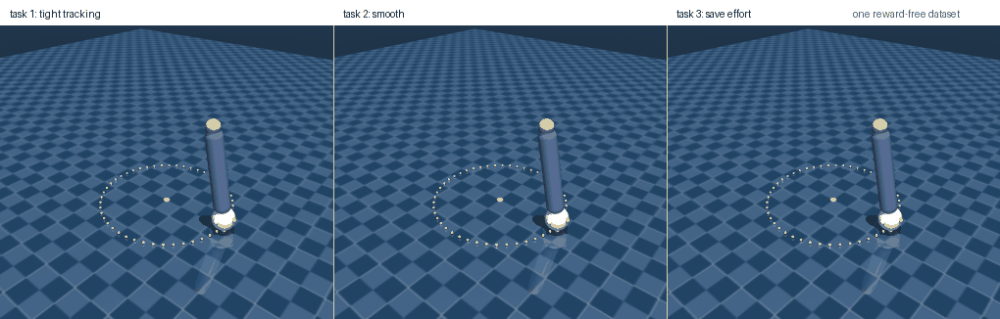
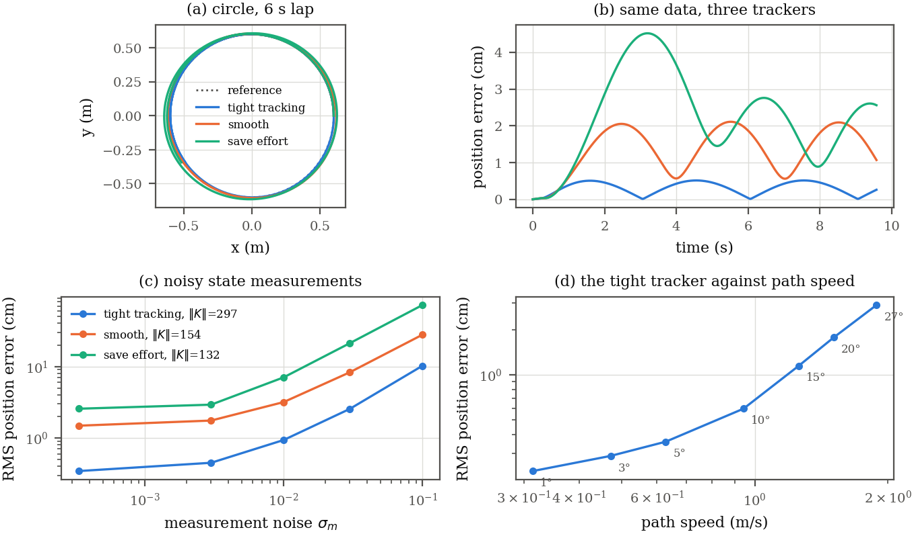
Humanoid on One Leg
The largest case follows MuJoCo's own LQR tutorial: the stock humanoid standing on its left leg, with the tutorial's cost, a centre-of-mass balance term plus per-joint weights. The state is 54-dimensional, with 21 torque inputs, and the foot contact is stiff, so the model is far from linear at the millimetre scale. The tutorial linearises the simulator and solves a Riccati equation. Here the offline phase only sees short reward-free episodes of random torques around the set-point, and every task is then read out of the representation. The finite-difference Riccati gain scores the result and is never used by the algorithm.
Two details matter. The keyframe is not quite a rest point, and without correcting that the data carry an affine term the linear model cannot hold. A few Newton steps on the pose and the torques remove it. The episodes also have to be short and small, four steps at about $10^{-3}$ rad, because the contact switches within a millimetre of foot height. Longer, larger episodes identify the secant of a nonlinear contact instead of the tangent that the gain needs.
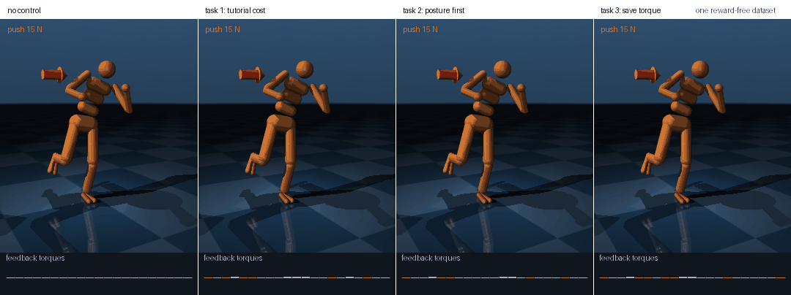
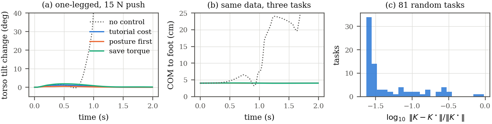
Lifting the Leg
The humanoid can also start on both feet and lift the right leg. The one-leg pose is one end of a family of equilibria: lowering the right leg toward the floor, with the rest of the body re-balanced, gives a chain of rest points that ends with the right foot touching down. Each of nine waypoints is found by Newton continuation from the previous one, and gets its own short reward-free dataset, its own representation and its own gain for the same tutorial cost. The controller follows the chain, interpolating the reference and the gain between waypoints, so the weight moves over the left leg while the foot comes up.
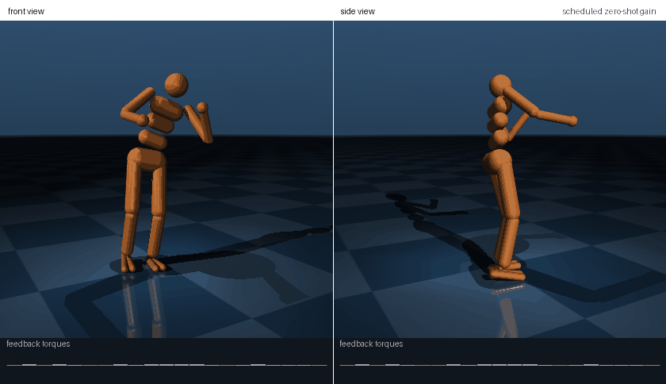
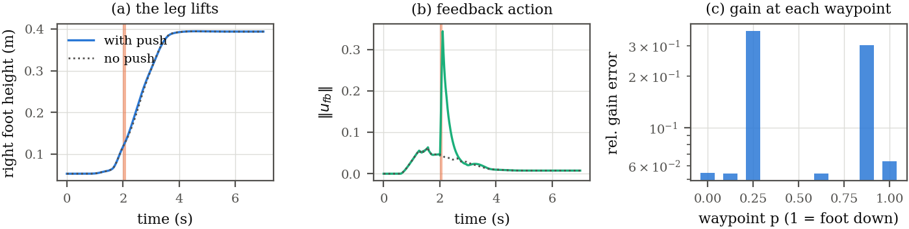
Unitree G1
The same pipeline runs on the Unitree G1, a 29-joint humanoid driven by joint torques, standing on both feet. The state has 70 dimensions and there are 29 torque inputs. Two details matter. The standing pose from inverse dynamics is not a rest point and the starting guess is far enough off that a plain Newton step diverges, so the set-point is refined with a trust region and a line search. And the model's joint dry friction has to go: a friction-loss constraint locks a joint at rest, so no small perturbation moves it and the linearisation sees no input at all. The offline data are short random-torque episodes around the set-point.
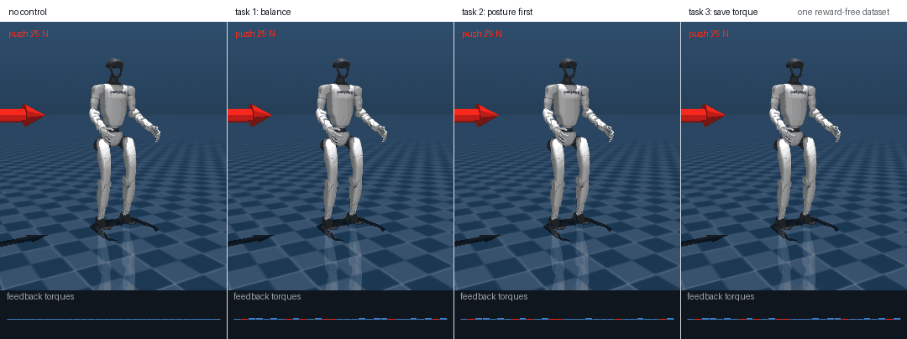
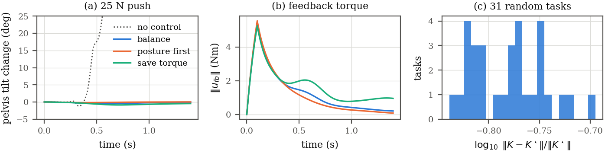
Unitree G1 on One Leg
My first attempt to find a single-leg rest point failed for a reason in the search, not in the robot. A Newton search that starts from the two-leg stance has to lift the right foot, and at lift-off the contact switches off, so the one-step velocity that the search tries to drive to zero is not smooth there. It stalled at a residual of about $10^{-1}$ whatever the target. The set-point is now built in three steps. First a smooth kinematic problem places the centre of mass over the left foot, with that foot fixed and flat and the right leg lifted. Then inverse dynamics gives the standing height and the torques. Then Newton steps on pose and torque remove what is left, from $2\times10^{-3}$ down to $8\times10^{-8}$. The result has the right foot $34\,$cm above the left, the centre of mass $3.8\,$cm from the left foot's centre and the pelvis tilted $16^\circ$.
The offline data need smaller excitation than on two feet. With the two-leg amplitudes the identified model is off by $1.7\times10^{-2}$, which is enough for the save-torque gain to destabilise the real system: it falls after a $3\,$N push and the closed-loop spectral radius is $1.0004$. At a tenth of the amplitude the model error is $2.0\times10^{-3}$ and all three gains hold. A gain that spends little torque has less margin to absorb model error, and a loop this close to the edge leaves very little.
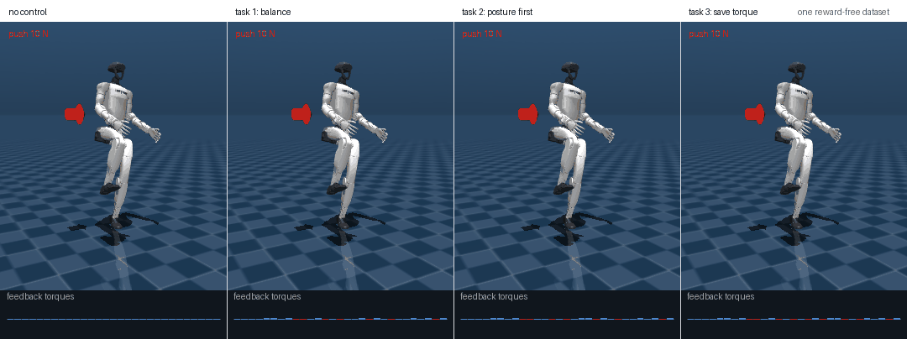
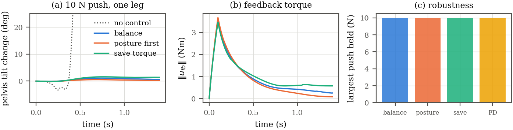
Unitree Go1 Quadruped
The last case is a quadruped, the Unitree Go1, one of the robots of the legged_control stack, standing on four feet. Here the gain acts at the torque level: the 12 joint motors are plain torque sources, with the reflected rotor inertia as joint armature and contacts only between the feet or body and the floor. The controllers of legged_control themselves, the OCS2 NMPC and the whole-body controller, are not used. The state has 36 dimensions. Four feet on the floor make the stance statically stable, so the set-point comes from inverse dynamics and a few Newton steps, and the finite-difference model is easy to match. The model error is $3.2\times10^{-3}$ with $40000$ samples, and a gain takes about $0.1\,$s to read out.
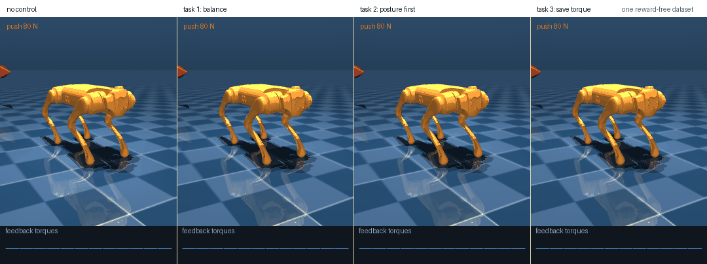
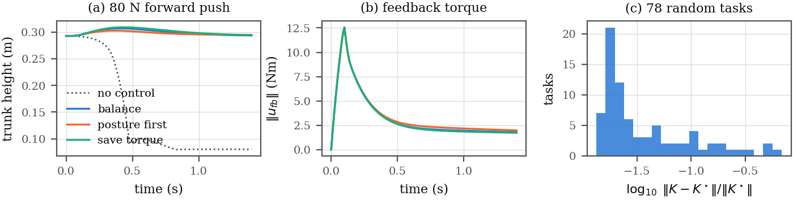
Go1 Walking
Standing is a fixed point, and walking is not. A trot is a limit cycle whose contacts switch on and off, so one linear model cannot describe it. The recipe here is periodic tracking of an orbit, and it is not a controller that invents the gait. The orbit comes from the simulator: a joint-PD controller follows foot trajectories generated by inverse kinematics (period $0.4\,$s, $0.29\,$m/s), and after a few seconds the closed loop settles on a periodic orbit. One period of states and applied torques, $200$ phases, is the reference.
For every phase the offline step collects its own short reward-free batch, $400$ one-step transitions with random deviations from the reference and random torques added to it, and keeps a fixed-size representation of that phase. A task $(Q,R)$ is then solved by the periodic backward Riccati recursion run on the $200$ representations alone, which gives one gain per phase, and the controller applies the recorded torque plus the gain times the deviation from the reference. The root's forward and sideways position is left out of the state, because the dynamics do not depend on it and the reference is for a moving robot. The finite-difference linearisation of each phase scores the result and is never used.
One change to the model was needed. With the stock contact parameters the one-step map has a jump at every touch-down, so a perturbation of $10^{-5}$ rad can change one step by a thousand times that, and no linear model fits. A softer impedance ramp removes the jump and leaves the gait as it was, $0.29$ against $0.30\,$m/s.
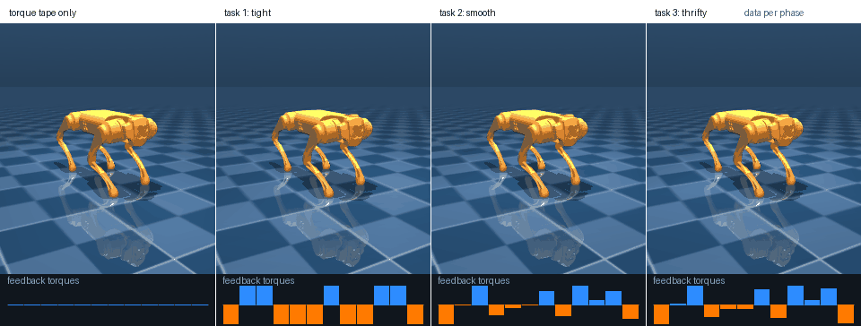
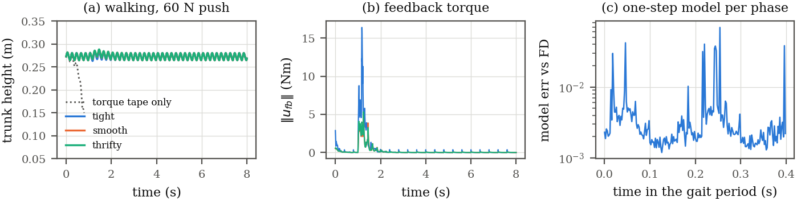
Go1 on a Circle
Walking along a path needs a reference that follows it. The simplest path that is still periodic is a circle: a steady turn is a limit cycle, once the state is seen from the circle. The trot tape gets longer strokes on the outside legs, the PD loop settles on an orbit with a constant yaw rate of $0.39\,$rad/s at $0.29\,$m/s, a circle of radius $0.74\,$m that takes $16\,$s to walk, and after one gait period of $0.4\,$s the whole state is the start state rotated about the centre of the circle. Everything else is as in the straight walk, with two changes that the turn needs. The root's position now stays in the state and gets a weight in the cost, since it is what brings the robot back to the circle after a push. And the measured state is rotated back about the centre by the angle that the reference has turned, so that the error is the one of the first period, for which the models were learned.
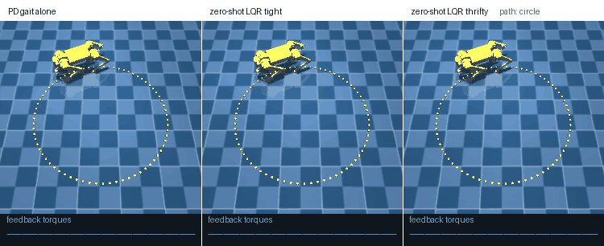
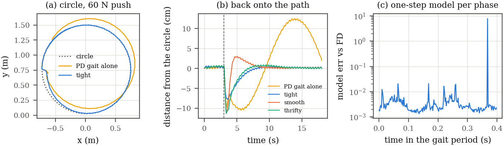
Franka Panda: Carrying a Block
The manipulator is a Franka Panda with seven torque-controlled joints, so the state has 14 dimensions. A fully actuated arm has a rest point at every pose, holding it takes the gravity torque, and that is what inverse dynamics returns. The costs are in task space: a weight on the tool tip's position and orientation through the Jacobian, plus a weight on the joints. Holding the ready pose, the model identified from $15000$ samples is within $2.8\times10^{-4}$ of the finite-difference one, and the gains for three tasks are within $5.0\times10^{-3}$, $1.2\times10^{-2}$ and $8.7\times10^{-3}$ of the Riccati ones, each after $9$ to $12$ policy-iteration steps in about $0.1\,$s. Over $200$ random tasks the median is $2.0\times10^{-2}$ and the worst case $8.1\times10^{-2}$.
The harder case moves. A $1.5\,$kg block is fixed to the gripper, and the tool tip carries it along a loop that lifts it, moves it over $0.5\,$m, lowers it and comes back, $8.4\,$s in all, with a stop at each corner. Every pose of the path is a rest point only while the arm is still, so the reference is a trajectory: the joint angles from inverse kinematics and the torque tape from inverse dynamics. Along it the offline step keeps a representation every $0.05\,$s, $168$ of them with $300$ one-step transitions each, and a task is solved by the periodic Riccati recursion over the loop on those representations alone, as for the quadruped's gait. The torque tape alone would hold the tip to $0.05\,$cm for the first second. The mass of the block is not given to the algorithm. It is in the data.
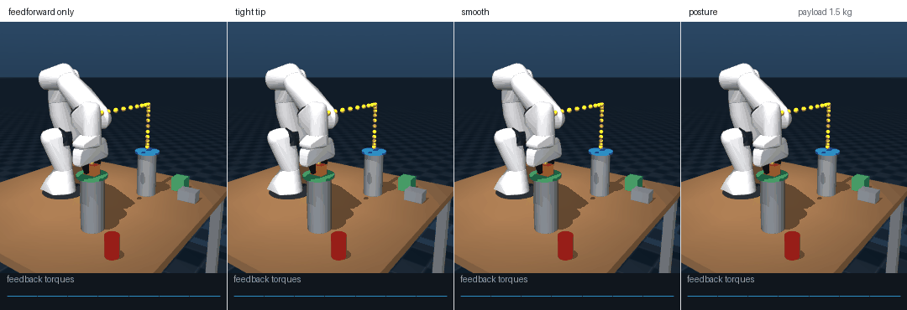
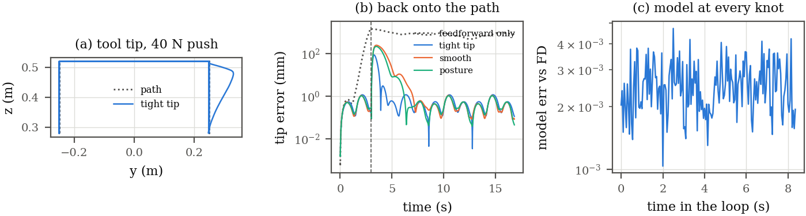
Machine-Precision Exactness, Constant Test-Time Cost, Predicted Sample Complexity
A single reward-free dataset solves 200 random LQR tasks to machine precision. SF-GPI closes most of the optimality gap without solving any equation at test time. The predicted $1/N$ sample-complexity rate holds across three excitation levels.
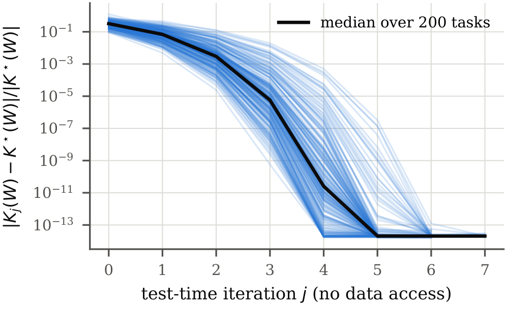
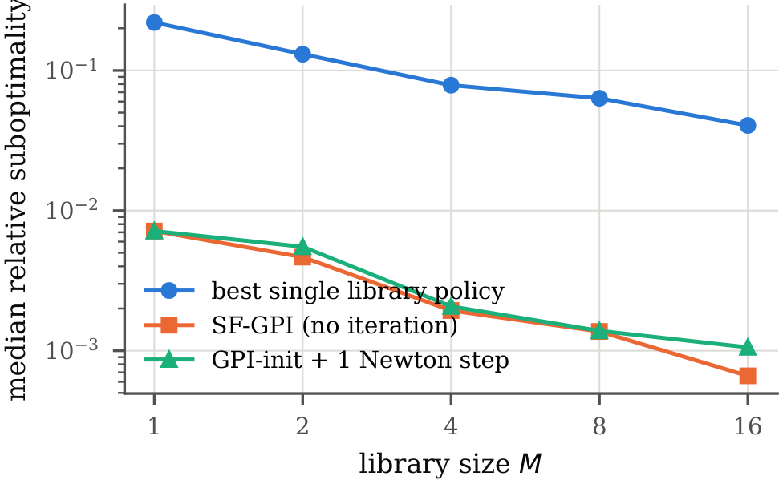
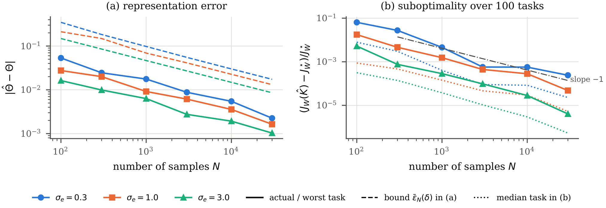
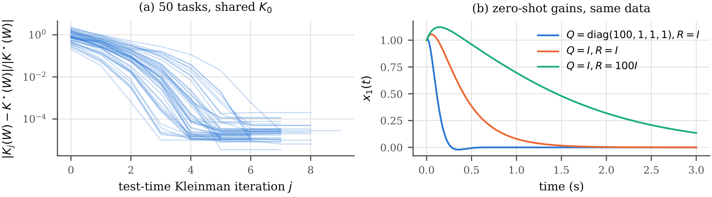
Table 1. Per-task test-time cost against per-task off-policy Q-learning on the same reward-free data (mean over 20 tasks)
| N | Offline (ms) | Zero-shot (ms) | Off-policy QL (ms) |
|---|---|---|---|
| 200 | 0.05 | 0.37 | 14.5 |
| 1000 | 0.08 | 0.39 | 73.3 |
| 5000 | 0.14 | 0.39 | 358.5 |
The zero-shot test-time cost stays flat at $\sim\!0.4\,$ms as $N$ grows $25\times$. Per-task off-policy Q-learning on the same data grows linearly with $N$. Both methods return the same gains, to within $2.2\times10^{-13}$–$1.4\times10^{-12}$.
Table 2. Task inference from noisy reward labels instead of $(Q,R)$ (50 tasks, $N=1000$)
| Label noise | Median weight error | Median subopt. | Worst subopt. |
|---|---|---|---|
| 0% | $1.7\times10^{-14}$ | $\approx 0$ | $3.3\times10^{-14}$ |
| 1% | 0.020 | $4.6\times10^{-5}$ | $3.0\times10^{-3}$ |
| 10% | 0.204 | $5.5\times10^{-3}$ | 0.168 |
| 100% | 2.12 | 0.191 | 1.76 |
Noise-free labels identify the task weights exactly. Even $1\%$ label noise leaves the median suboptimality at $4.6\times10^{-5}$, because the LQR solution tolerates moderate weight errors. Specifying a task by reward labels is therefore practical.
Citation
@misc{dao2026zeroshotlqr,
title={Zero-Shot Linear Quadratic Regulation from Reward-Free Data: Structured Successor Features with Stability and Finite-Sample Guarantees},
author={Dao, Huy and Thai, Khanh and Le, Bao},
year={2026}
}